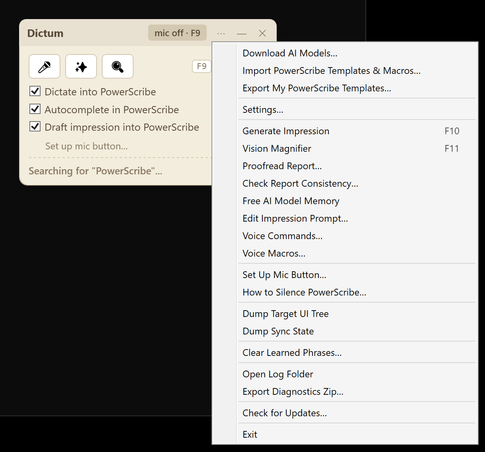
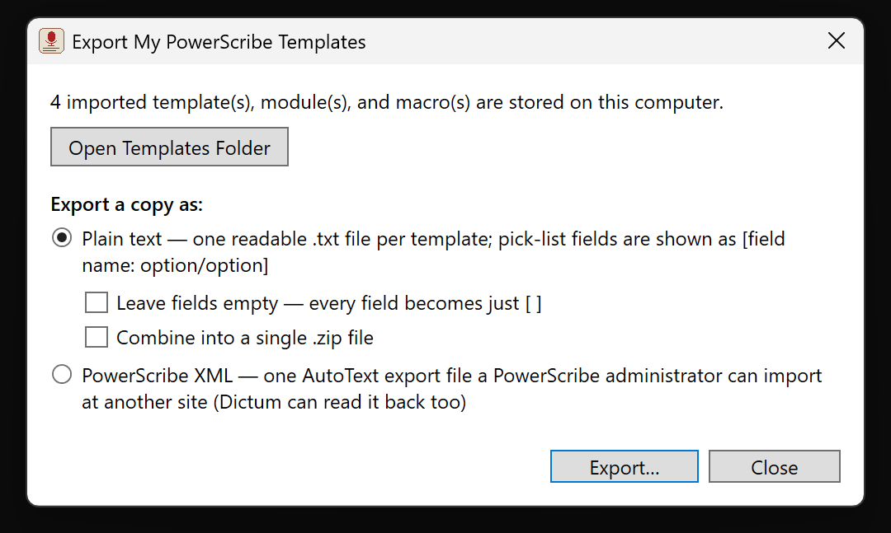
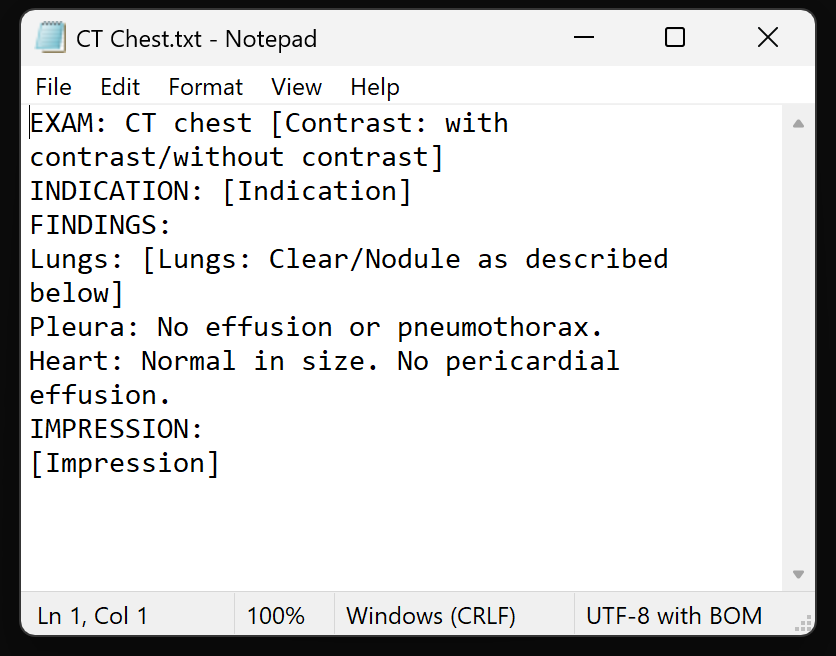

How to export your PowerScribe templates (without asking IT)
Your AutoText library is years of accumulated work: report templates tuned to your reading style, modules for every protocol variation, macros for the phrases you dictate fifty times a day. With PowerScribe 360 heading to end of life, a lot of radiologists want a copy of that library. Before a migration, before a job change, or simply as a backup.
Here is the catch: PowerScribe will not let you take it.
There is no export button in your PowerScribe
Open the AutoText Editor in the PowerScribe client you use every day and look at what it offers: create, edit, clone, delete. No export. That is not an oversight in your site's configuration. Exporting AutoText is documented as an administrator function, performed in the web-based Administrator Portal, which requires admin rights your radiologist account does not have. The admin guides for both PowerScribe 360 and PowerScribe One describe the Export feature exclusively for administrators.
In practice that means filing a ticket, waiting for someone in IT with portal access, and hoping the request does not fall into a queue. For templates you wrote yourself.
Your account can already read them. Dictum uses that.
Dictum is a free companion app that runs next to PowerScribe on your reporting workstation. Among other things, it can sign into the same PowerScribe server your reporting client talks to, using your own PowerScribe username and password, and download the AutoText your account owns: templates, modules, and macros. No admin rights, no ticket. Everything happens on your workstation, over the same hospital network PowerScribe itself uses.
Step by step: templates to a folder in about five minutes
- Download Dictum from the download page (free, installs without admin rights). If your hospital network blocks this site, use the GitHub mirror.
- Import your library. Click the ⋯ menu
on the Dictum widget and choose Import PowerScribe Templates &
Macros…. Sign in with the same username and password you use for
PowerScribe (Dictum usually detects your server address automatically).
Dictum downloads faithful copies of your templates, modules, and macros
onto your workstation.

Import and Export both live in the widget's ⋯ menu. - Export them. Click ⋯ again and choose
Export My PowerScribe Templates….

The export dialog. You can open the folder that holds the imported copies, or write them out in the format you want:- Plain text (the default): one readable .txt file
per template. Opens in Notepad, Word, anything. Pick-list fields
are preserved as
[field name: option 1/option 2/...]so you can see every blank and every choice your template offered. Prefer a cleaner read? Tick "Leave fields empty" and every field becomes just[ ]. You can bundle the text files into a single .zip to archive or email to yourself. - PowerScribe XML: one AutoText export file in the same format the admin portal produces. A PowerScribe administrator at your next site can import it, and Dictum can read it back too.
- Plain text (the default): one readable .txt file
per template. Opens in Notepad, Word, anything. Pick-list fields
are preserved as
- Done. Dictum opens the exported files in Explorer.
Copy them to a USB drive, your home directory, wherever your hospital's
policies allow.

An exported template in Notepad: plain text, with every field and its choices preserved.
Common questions
Is this allowed? Dictum signs in as you and downloads only the AutoText your own account owns, exactly what the PowerScribe client shows you every day. Nothing is sent anywhere: the files land on the workstation you are sitting at. Check your institution's policies on moving files off the workstation, as you would with any document.
Is there patient data in templates? Templates and macros are boilerplate you wrote before any patient was involved. They are not reports and contain no patient information (assuming you did not paste any into a template yourself; the plain-text export makes that easy to check).
Does this work on PowerScribe One? Yes. The import works against both PowerScribe 360 and PowerScribe One servers.
Dictum does more than rescue your templates. I am a practicing radiologist, and I built Dictum as a free companion app for PowerScribe: a modern offline speech model with no voice profile to drift, voice macros for your imported AutoText, and AI drafting that runs entirely on your workstation. It installs in about five minutes with no admin rights and works alongside PowerScribe 360 and PowerScribe One.
Download Dictum (free). If your hospital network blocks this site, use the GitHub mirror.
Related: PowerScribe 360 end of life: what radiologists need to know · Why your PowerScribe voice profile keeps drifting (and what actually fixes it)